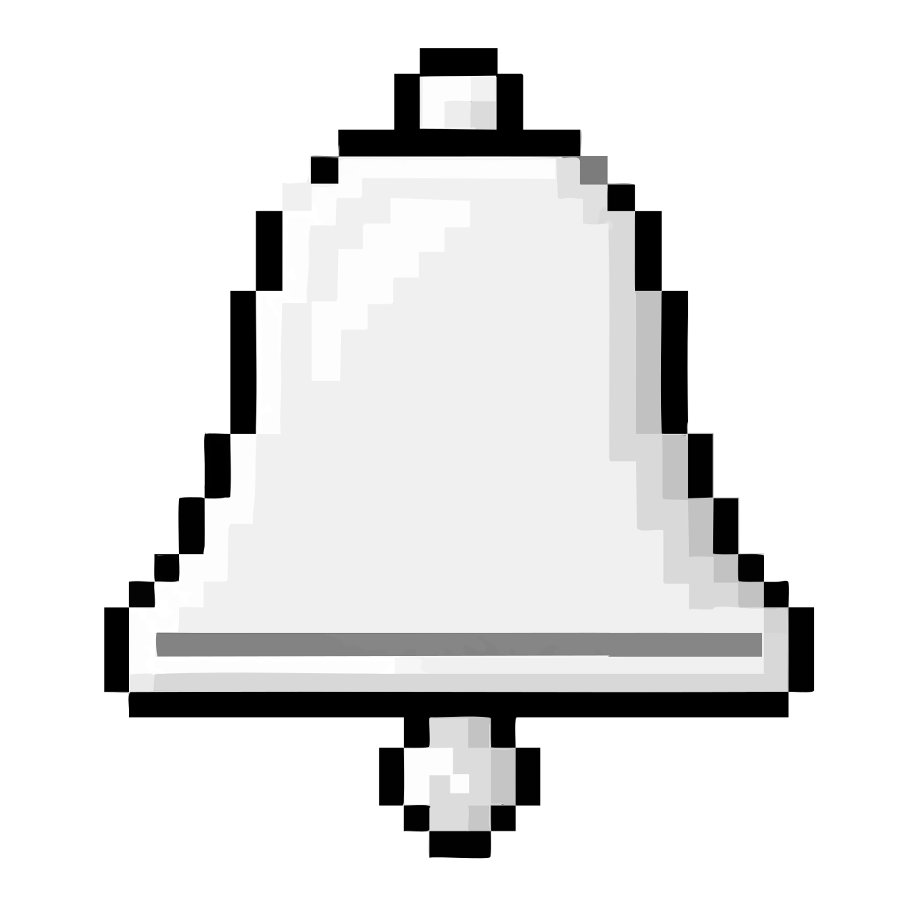
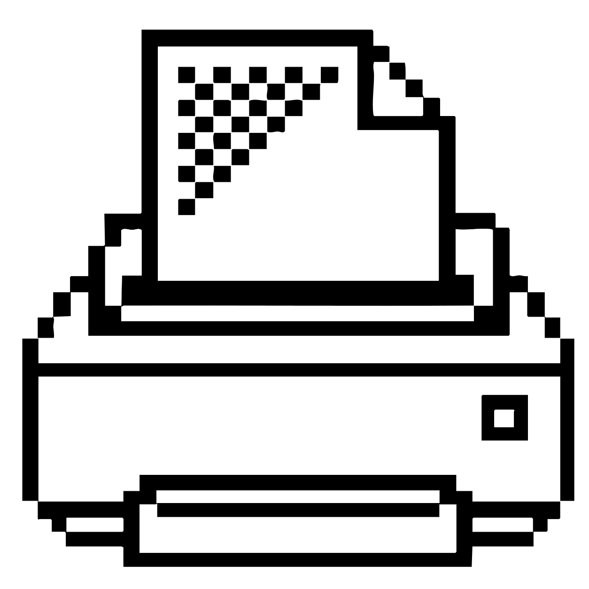
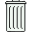

17 éléments 1,2 Go disponibles
7 traitées cette semaine
·
1 en attente

🔔 2Mac
Apple Silicon (M1 ou plus récent)
16 Go de RAM minimum
PC
Processeur récent (moins de 5 ans)
16 Go de RAM minimum
En dessous de 16 Go de RAM, les fonctions de génération d'image et de transcription risquent d'être très lentes, voire d'échouer.
En 1984, l'informatique personnelle faisait un pari simple : rendre une technologie complexe accessible au plus grand nombre.
Stanislas reprend cette idée avec l'IA.
Pas besoin de connaître les modèles, les prompts ou la technique.
On clique. On demande. On obtient.
Stanislas est une expérience personnelle autour d'une question :
à quoi aurait ressemblé une IA si elle avait été pensée avec l'esprit des premiers ordinateurs personnels ?
Une interface simple.
Des fonctions concrètes.
La complexité cachée derrière.
L'IA est un outil puissant.
Mais son utilisation est parfois inutilement complexe pour beaucoup de gens — y compris pour une génération qui a connu l'essor du Macintosh en 1984 et sa philosophie de simplicité.
Prompts, modèles, paramètres, agents…
Et si on revenait à l'essentiel ?
Une fonction.
Une icône.
Un clic.
Keep it simple.
Et peut-être une autre façon d'aborder l'IA aujourd'hui.
Alain Caviggia
Concepteur et créatif.
Communication, digital, contenu et expérience.
Après plusieurs décennies à concevoir des projets pour des annonceurs et des agences, je continue à explorer les nouveaux outils et les nouvelles façons de créer.
Stanislas est l'une d'entre elles.
Je suis toujours disponible pour de nouvelles missions.
Créatives.
Stratégiques.
Digitales.
IA & innovation.
Une idée ? Un problème à résoudre ? Un projet à imaginer ?
→ alaincaviggia.eu
→ caviggiaalain@me.com

